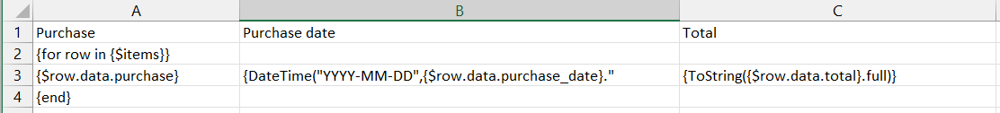
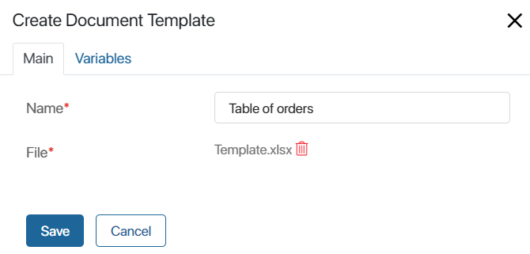
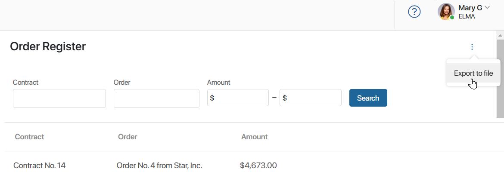
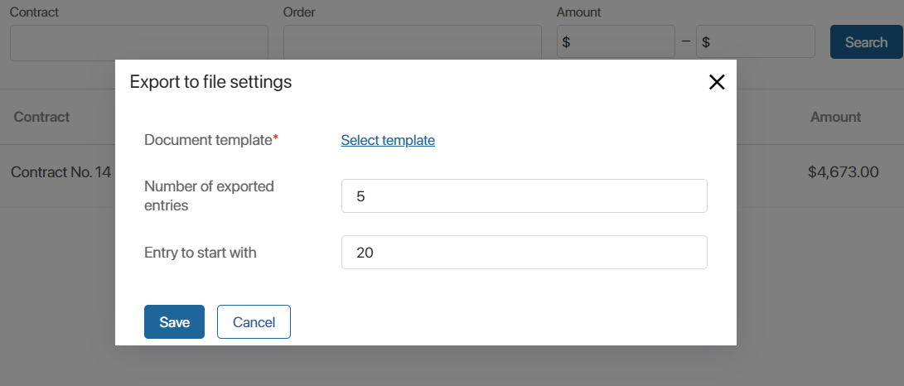
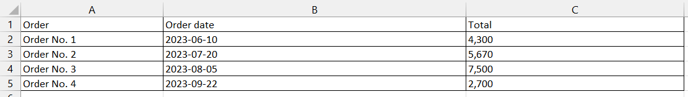

You can save information from a report to an .xlsx file. You can set the table template, according to which the data from source apps will be exported, as well as select the number of exported rows and specify their order.
Export is performed in several steps
- A document template is created. Functions and codes of exported columns are used.
- The template is added to BRIX
- You can then go to the report page and export the desired data.
Create template
The template is created in .xlsx format. To customize the template, the Cycle For for tables function is used. The required column is indicated by the code assigned when adding it to the report settings. You can also use additional functions in the template, for example, to designate the full date.
Suppose you need to export the Order Register report to a table that would show the order, creation date, and contracted amount. To make a template:
- Specify the column names in the prepared table with data.
- In the first column, use the
forcycle and specify theitemsvariable that will store the list of exported data:{for row in {$items}}. - Go to the report page, click on the gear icon next to the report name, and select Source settings. In the list, find the codes of the columns to be exported. In our example, the following columns are used:
- Report name:
purchase; - Report creation date:
purchase_date; - Contract amount:
total.
- Specify the codes of the required columns in the template using the construction:
{$row.data.code_value}. Starting from version 2024.1 the prefix data is not required, and you can use constructions like{$row.code_value}.
You can determine the order of rows in the template by placing all variables in one or several columns. - To change the value of a report row, use special functions. In our example, the following functions are used: DateTime() to define the date format and ToString() to output the contract amount with currency. For more details on how to use functions, see Template syntax.
- Close the loop by specifying the value
{end}in the first column of the template. - Save the template.
The finished template may look as follows:

Add a document template
You can create an unlimited number of templates for exporting data from the report. Each of them must be uploaded to the system. To do this, follow the steps below:
- Go to the report page, click the gear icon next to the report name, and select Document Templates.
- In the upper right corner of the page, click +Template.
- In the opened window on the Main tab, specify a name and add the prepared template file.

- On the Variables tab, select the Table data type from the drop-down list
- Save the added template.
Export the report
Follow the steps below to export data from the report using the template:
- Go to the report page.
- In the upper right corner, click on the three dots icon and select Export to file.

- In the opened window, fill in the fields:

- Document template*. Click Select template and specify the file added in the report settings;
- Number of exported entries. Specify how many entries from the report should be displayed in the table. If you leave the value 0 in this field, the exported table will have no data;
- Entry to start with. Specify the number of the entry to start counting the number of rows to be exported. Leave the value 0 when exporting the report from the first row.
- Click Save.
- Wait until the export is completed and download the generated file to your computer by clicking on the link in the opened window.
The data according to the template and the specified parameters will be saved to an .xlsx file.
In our example, the table will display the name of the order, the date of its creation in the format Year-Month-Day, as well as the total amount under the contract.

Found a typo? Select it and press Ctrl+Enter to send us feedback